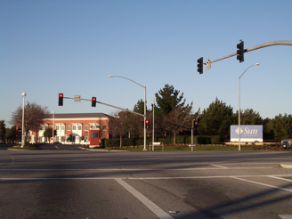
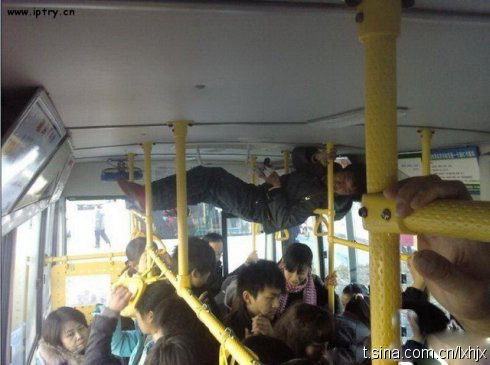

Sun的Menlo Park园区，有点想念。那里很像个大学校园，楼中间的空地经常看见小松鼠。不知道Java-Java餐馆是不是还在。@新浪科技:最新消息显示，Facebook正在考虑以“售后回租”的形式搬进前Sun公司的办公园区，知情人士透露，相关成本将高达4.2亿美元。当前，Sun的门洛帕克园区估值约2.284亿美元。本周一有消息称，Facebook刚从高盛和俄罗斯投资公司DST获得5亿美元投资。 网页链接 
中国互联网的主流是三低人群，低龄，低收入，低学历，在这些人中找收入，腾迅做得最好。中国的主流互联网人群变成三高，得要好多年。@刘松--云时代:美国互联网行业有一个得天独厚的客户环境，美国消费喜欢科技，尝试新东西，辨识能力强，可支付收入多，新东西导入期短。中美互联网企业的收入差别，客户群是一个很大的要素
老人当成龙，是因为年轻人不让。这不让人心酸吗？上了车，老人不用演林黛玉，他们就是需要照顾。@冷笑话精选:某公交车上下班高峰，某老妇与年轻女子争座口角，最后该女子的总结陈词：“我最讨厌你这种以老卖老的，插队挤上车的时候就演成龙，上了车后就专演林黛玉！”。 